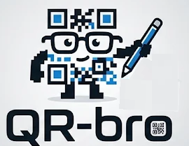

おすすめの手順ユーザーガイド
おすすめの手順
連絡先リンクを開いてリンクを作成するか、QR コードに含めるテキストをコピーします。

ジェネレーターを開き、リンクまたはテキストを QR コンテンツ フィールドに貼り付けます。

プレビューでコードが気に入るまで、さまざまな余白、色、形状を試してください。

プレビューの下にある大きな [PNG をダウンロード] ボタンをクリックして、QR コードを画像として保存します。

スクリーンショットを撮ったりアップロードしたりしていないオプションが他にもたくさんありますが、アイデアは理解できますか。
誰も私にお金を払ってくれませんし、私の犬は散歩のために1時間も待っています。
ある日、残りの部分に戻ります。
発電機
QR BRO で開く ↗URL またはテキストを入力します。編集するとプレビューが更新されます。単一の画像の PNG または個別の QR レイヤーの ZIP をダウンロードします。

QRコンテンツ
スキャナーで読み取らせたい完全なテキストを貼り付けます。
エンコーディング
エラー訂正とマスク パターンを選択します。補正値を高くすると、破損したデータを回復する余地が大きくなりますが、密度が増加する可能性があります。
余白
モジュール内に静かな境界線を設定します。 4 つの明確なモジュールは、スキャナがコードを見つけるのに役立ちます。ノイズ、安全なスペース、レイヤーのコントロールにより、周囲のデザインが変わります。
ピクセルとマーカー
モジュールの形状を選択し、コーナー マーカーを個別にスタイル設定します。形状変更後の結果をスキャンします。
色
明るい色と暗い色を選択するか、反転させます。スキャンに十分なコントラストを維持してください。
詳細オプション
このグループを展開して、QR の密度、寸法、遠近感を制御します。
バージョンとピクセルサイズ
QR バージョンの範囲を制限し、ピクセル サイズを調整します。コンテンツがバージョン制限を超えている場合は、バージョン制限を短くするか、最大値を上げてください。
変身
各軸の遠近感を調整します。歪みを適用した後にエクスポートされた画像を確認します。
スケールとアスペクト
プレビューのズーム、キャンバス サイズ、縦横比、透明度を設定します。 JSON コントロールを使用して、編集可能な設定をエクスポートまたは再ロードします。
連絡先リンク
QR BRO で開く ↗まずプラットフォームを選択します。国際電話番号、ユーザー名、電子メールなど、要求された受信者を入力します。サポートされている場合はメッセージを追加します。グループ電子メールフィールドの場合は、受信者をカンマまたはスペースで区切ります。生成されたリンクをコピーするか、[QR の作成] を選択してジェネレーターで開きます。

検証する
QR BRO で開く ↗QR 画像をアップロード、ドロップ、または貼り付けます。デコードされた内容とスキャンステータスを読み取ります。コントラスト、クワイエット ゾーン、濃度を確認し、結果をコピーするか、ジェネレーターに送信します。

画像の違い
元の画像と処理された画像の間でどのピクセルが変更されたかを検査します。
画像調整
サイズ変更、グレースケール、コントラスト、明るさ、ぼかしなどを試してみてください。設定をロックして、ランダム化された試行中にその設定を保持します。新しいスキャンをオリジナルと比較します。
比較する
QR BRO で開く ↗ターゲット画像とソース QR をアップロードするか、現在のジェネレーター出力をソースとして使用します。 3 番目のプレビューでは、モジュール間の相違点がマップされます。いずれかの入力を拡大して、そのデコードされたテキストをコピーできます。

ターゲット処理
比較する前に、グレースケール、コントラスト、明るさ、ぼかし、ピクセル化を調整します。
グリッドの配置
ターゲットまたはソースを共有グリッド参照として使用します。画像の余白が異なる場合は、独立した配置を選択します。手動コントロールでグリッドのサイズとマージンを調整します。
グリッドの外観
グリッドを有効にし、グリッドが表示される画像を選択し、線の色と不透明度を調整します。
オーバーレイ設定
オーバーレイを有効にし、ブレンドと不透明度を調整して、重なっている詳細を比較します。
差分設定
一致、差の種類、または強度のカラー モードを選択します。詳細な検査のためにモジュールを選択します。選択内容を並べ替えたり、識別色を変更したりできます。
比較統計
不一致数と平均輝度を読み取り、選択した比較を評価します。
補正設定
補正を調整し、プレビューし、相違点を強調表示し、補正画像またはマスクをダウンロードします。
私のアカウントとセーブスロット
QR BRO で開く ↗番号付きボタンを使用して、10 個のローカル プロジェクトを切り替えます。サインインしてデバイス間で同期します。電子メールとパスワードを使用してアカウントを作成し、電子メールのリンクまたはコードで確認します。 GoogleやGitHubも利用可能です。アカウントでは、プロファイルの編集、サインイン方法と 2 要素認証の管理、同期の競合の確認、設定のバックアップ、またはサインアウトを行うことができます。

見た目も言葉遣いも
QR BRO で開く ↗保存スロットの横にある外観ボタンを開きます。言語、テーマ、ライト モードまたはダーク モードを選択します。選択した言語はこのデバイスに記憶されます。

クレジット
QR BRO で開く ↗クリエイターのリンク、ライブラリ、謝辞のオープン クレジット。利用規約はサイトのフッターにリンクされています。